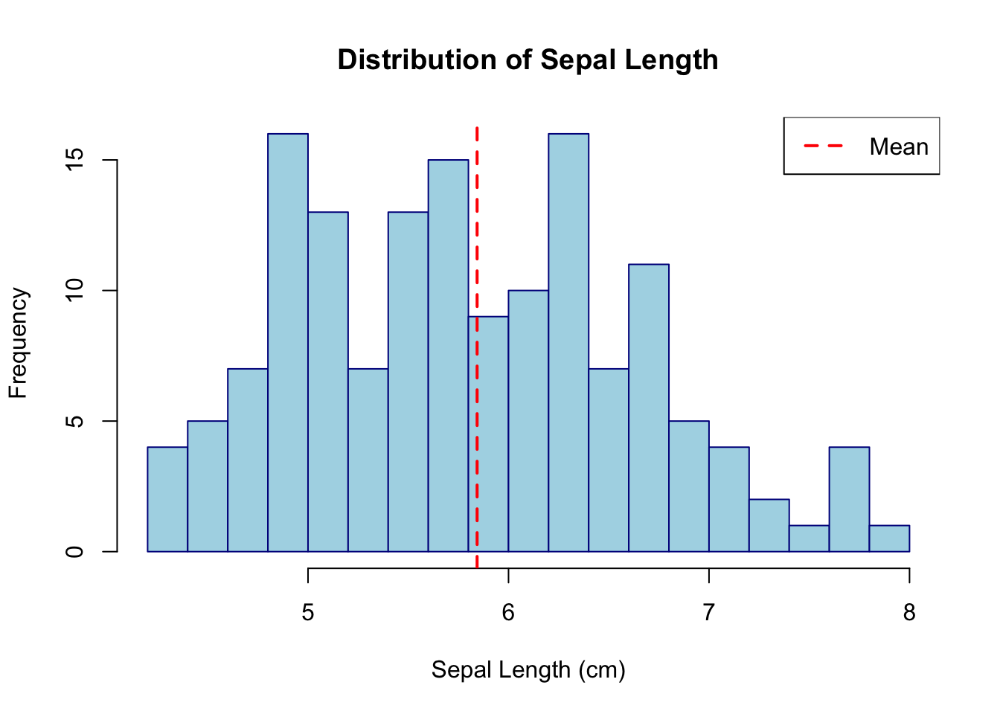
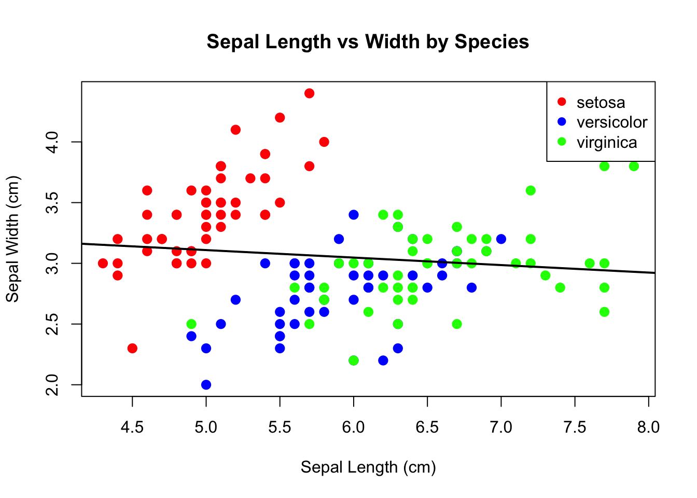
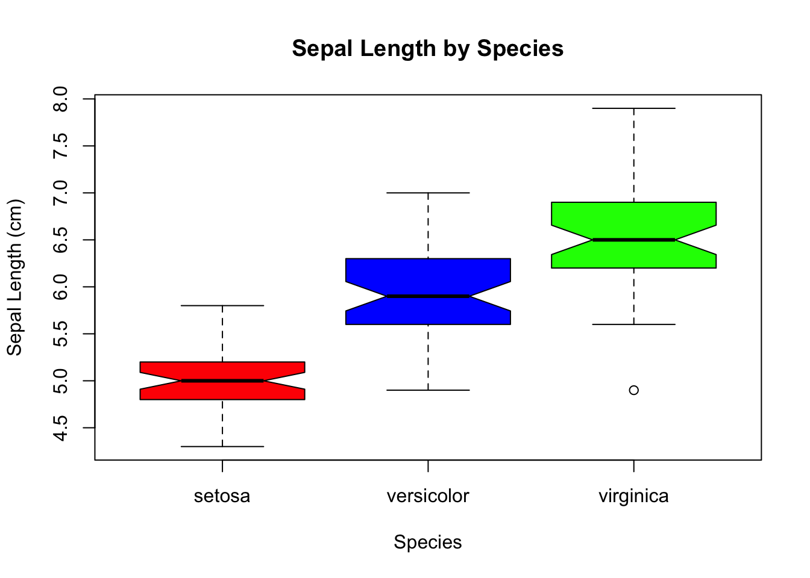
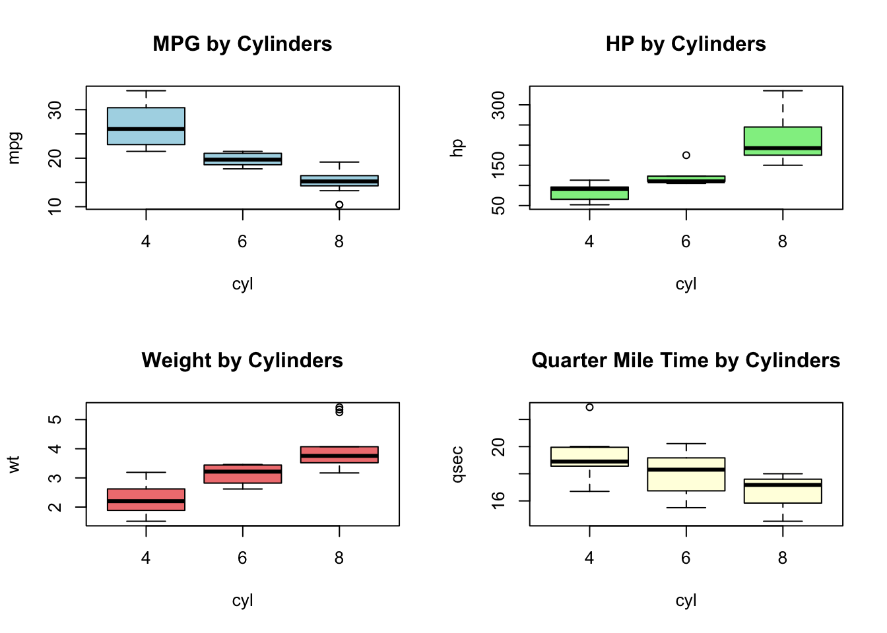
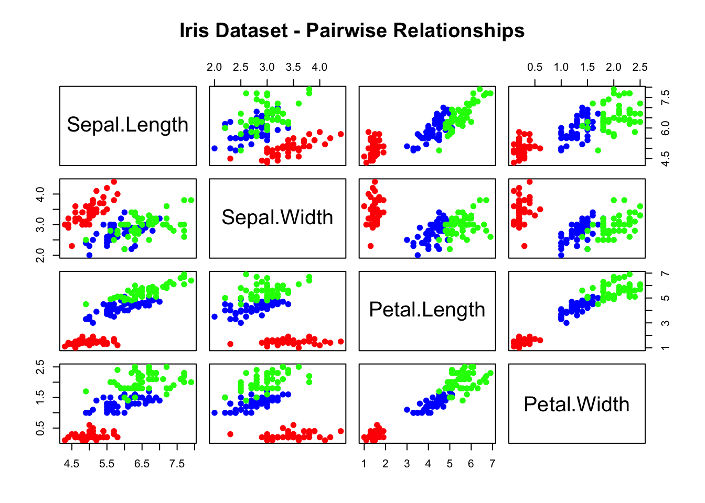
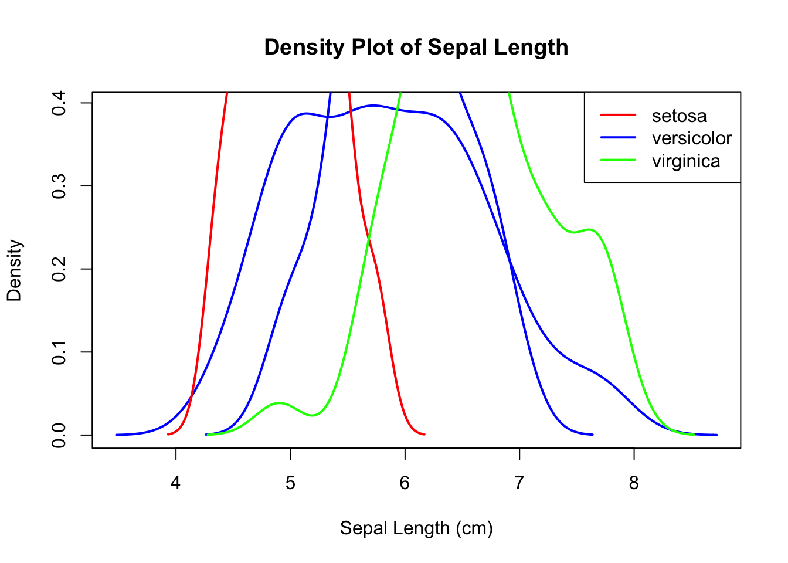
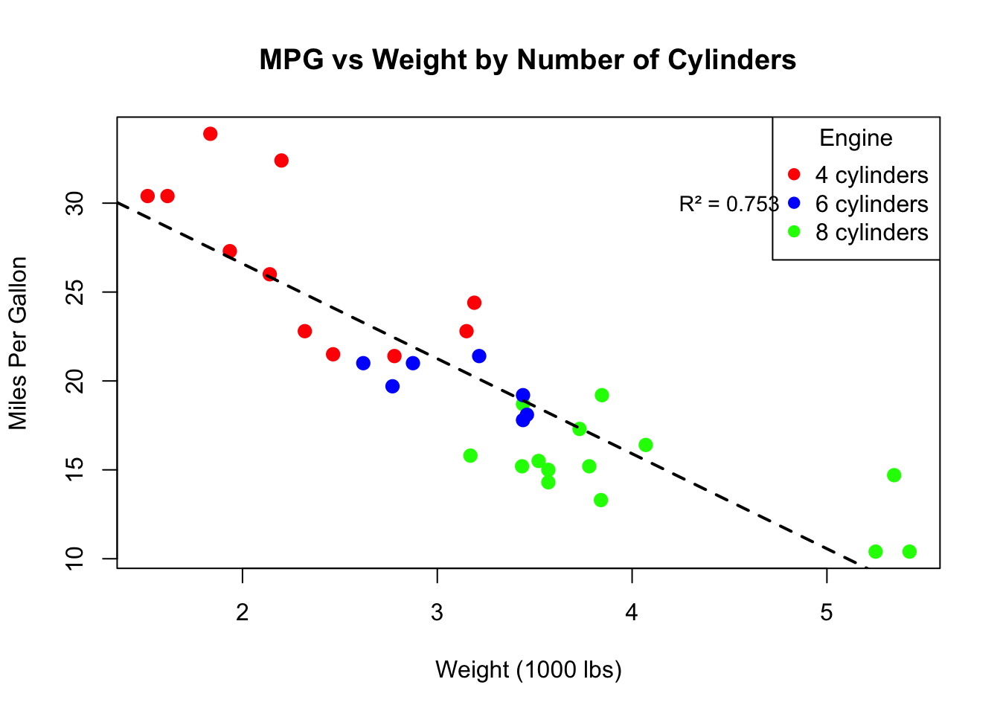

# Load the iris dataset
data(iris)
data(mtcars)
# Explore iris dataset
head(iris)
str(iris)
summary(iris)Lab One: Part Two
Part 2: Data Analysis, Visualization, and Programming (60 minutes)
Advanced Data Exploration (15 minutes)
Let’s work with R’s built-in datasets and explore more advanced data manipulation techniques.
Loading and Exploring Datasets
Show Output
Sepal.Length Sepal.Width Petal.Length Petal.Width Species
1 5.1 3.5 1.4 0.2 setosa
2 4.9 3.0 1.4 0.2 setosa
3 4.7 3.2 1.3 0.2 setosa
4 4.6 3.1 1.5 0.2 setosa
5 5.0 3.6 1.4 0.2 setosa
6 5.4 3.9 1.7 0.4 setosa'data.frame': 150 obs. of 5 variables:
$ Sepal.Length: num 5.1 4.9 4.7 4.6 5 5.4 4.6 5 4.4 4.9 ...
$ Sepal.Width : num 3.5 3 3.2 3.1 3.6 3.9 3.4 3.4 2.9 3.1 ...
$ Petal.Length: num 1.4 1.4 1.3 1.5 1.4 1.7 1.4 1.5 1.4 1.5 ...
$ Petal.Width : num 0.2 0.2 0.2 0.2 0.2 0.4 0.3 0.2 0.2 0.1 ...
$ Species : Factor w/ 3 levels "setosa","versicolor",..: 1 1 1 1 1 1 1 1 1 1 ... Sepal.Length Sepal.Width Petal.Length Petal.Width
Min. :4.300 Min. :2.000 Min. :1.000 Min. :0.100
1st Qu.:5.100 1st Qu.:2.800 1st Qu.:1.600 1st Qu.:0.300
Median :5.800 Median :3.000 Median :4.350 Median :1.300
Mean :5.843 Mean :3.057 Mean :3.758 Mean :1.199
3rd Qu.:6.400 3rd Qu.:3.300 3rd Qu.:5.100 3rd Qu.:1.800
Max. :7.900 Max. :4.400 Max. :6.900 Max. :2.500
Species
setosa :50
versicolor:50
virginica :50
Advanced Summary Statistics
# More detailed exploration
sapply(iris[, 1:4], mean) # Apply mean to numeric columns
sapply(iris[, 1:4], sd) # Standard deviation
sapply(iris[, 1:4], range) # Range for each column
Show Output
Sepal.Length Sepal.Width Petal.Length Petal.Width
5.843333 3.057333 3.758000 1.199333 Sepal.Length Sepal.Width Petal.Length Petal.Width
0.8280661 0.4358663 1.7652982 0.7622377 Sepal.Length Sepal.Width Petal.Length Petal.Width
[1,] 4.3 2.0 1.0 0.1
[2,] 7.9 4.4 6.9 2.5Exploring Categorical Variables
# Exploring categorical variables
table(iris$Species)
prop.table(table(iris$Species)) # Proportions
# Cross-tabulation with mtcars
table(mtcars$cyl, mtcars$gear)
prop.table(table(mtcars$cyl, mtcars$gear), margin = 1) # Row proportions
Show Output
setosa versicolor virginica
50 50 50
setosa versicolor virginica
0.3333333 0.3333333 0.3333333
3 4 5
4 1 8 2
6 2 4 1
8 12 0 2
3 4 5
4 0.09090909 0.72727273 0.18181818
6 0.28571429 0.57142857 0.14285714
8 0.85714286 0.00000000 0.14285714Advanced Filtering and Subsetting
# Advanced filtering and subsetting
# Multiple conditions
large_setosa <- iris[iris$Species == "setosa" & iris$Sepal.Length > 5, ]
efficient_powerful <- mtcars[mtcars$mpg > 20 & mtcars$hp > 100, ]
# Using %in% operator
selected_species <- iris[iris$Species %in% c("setosa", "versicolor"), ]
print("Large setosa flowers:")
print(large_setosa)
print("Efficient and powerful cars:")
print(efficient_powerful)
Show Output
[1] "Large setosa flowers:" Sepal.Length Sepal.Width Petal.Length Petal.Width Species
1 5.1 3.5 1.4 0.2 setosa
6 5.4 3.9 1.7 0.4 setosa
11 5.4 3.7 1.5 0.2 setosa
15 5.8 4.0 1.2 0.2 setosa
16 5.7 4.4 1.5 0.4 setosa
17 5.4 3.9 1.3 0.4 setosa
18 5.1 3.5 1.4 0.3 setosa
19 5.7 3.8 1.7 0.3 setosa
20 5.1 3.8 1.5 0.3 setosa
21 5.4 3.4 1.7 0.2 setosa
22 5.1 3.7 1.5 0.4 setosa
24 5.1 3.3 1.7 0.5 setosa
28 5.2 3.5 1.5 0.2 setosa
29 5.2 3.4 1.4 0.2 setosa
32 5.4 3.4 1.5 0.4 setosa
33 5.2 4.1 1.5 0.1 setosa
34 5.5 4.2 1.4 0.2 setosa
37 5.5 3.5 1.3 0.2 setosa
40 5.1 3.4 1.5 0.2 setosa
45 5.1 3.8 1.9 0.4 setosa
47 5.1 3.8 1.6 0.2 setosa
49 5.3 3.7 1.5 0.2 setosa[1] "Efficient and powerful cars:" mpg cyl disp hp drat wt qsec vs am gear carb
Mazda RX4 21.0 6 160.0 110 3.90 2.620 16.46 0 1 4 4
Mazda RX4 Wag 21.0 6 160.0 110 3.90 2.875 17.02 0 1 4 4
Hornet 4 Drive 21.4 6 258.0 110 3.08 3.215 19.44 1 0 3 1
Lotus Europa 30.4 4 95.1 113 3.77 1.513 16.90 1 1 5 2
Volvo 142E 21.4 4 121.0 109 4.11 2.780 18.60 1 1 4 2Sampling and Aggregating Data
# Sampling data
sample_rows <- sample(nrow(iris), 10) # Random 10 row indices
iris_sample <- iris[sample_rows, ]
# Aggregating data
# Average measurements by species
aggregate(. ~ Species, data = iris, FUN = mean)
# Multiple statistics
aggregate(cbind(mpg, hp) ~ cyl, data = mtcars,
FUN = function(x) c(mean = mean(x), sd = sd(x)))
Show Output
[1] "Random sample of iris data:" Sepal.Length Sepal.Width Petal.Length Petal.Width Species
127 6.2 2.8 4.8 1.8 virginica
116 6.4 3.2 5.3 2.3 virginica
121 6.9 3.2 5.7 2.3 virginica
43 4.4 3.2 1.3 0.2 setosa
52 6.4 3.2 4.5 1.5 versicolor
88 6.3 2.3 4.4 1.3 versicolor
139 6.0 3.0 4.8 1.8 virginica
14 4.3 3.0 1.1 0.1 setosa
6 5.4 3.9 1.7 0.4 setosa
31 4.8 3.1 1.6 0.2 setosa[1] "Average measurements by species:" Species Sepal.Length Sepal.Width Petal.Length Petal.Width
1 setosa 5.006 3.428 1.462 0.246
2 versicolor 5.936 2.770 4.260 1.326
3 virginica 6.588 2.974 5.552 2.026[1] "MPG and HP statistics by cylinder:" cyl mpg.mean mpg.sd hp.mean hp.sd
1 4 26.663636 4.509828 82.63636 20.93453
2 6 19.742857 1.453567 122.28571 24.26049
3 8 15.100000 2.560048 209.21429 50.97689Comprehensive Visualization (20 minutes)
R’s plotting capabilities are extensive. Let’s explore various types of plots.
Enhanced Histograms
# Basic plots with customization
# Histogram with better styling
hist(iris$Sepal.Length,
main = "Distribution of Sepal Length",
xlab = "Sepal Length (cm)",
ylab = "Frequency",
col = "lightblue",
border = "darkblue",
breaks = 15)
# Add vertical line for mean
abline(v = mean(iris$Sepal.Length), col = "red", lwd = 2, lty = 2)
legend("topright", legend = "Mean", col = "red", lwd = 2, lty = 2)
Show Output

Scatter Plots with Groups
# Scatter plot with groups
plot(iris$Sepal.Length, iris$Sepal.Width,
main = "Sepal Length vs Width by Species",
xlab = "Sepal Length (cm)",
ylab = "Sepal Width (cm)",
col = c("red", "blue", "green")[iris$Species],
pch = 19,
cex = 1.2)
# Add legend
legend("topright",
legend = levels(iris$Species),
col = c("red", "blue", "green"),
pch = 19)
# Add trend line
abline(lm(Sepal.Width ~ Sepal.Length, data = iris), col = "black", lwd = 2)
Show Output

Box Plots
# Box plots
boxplot(Sepal.Length ~ Species, data = iris,
main = "Sepal Length by Species",
xlab = "Species",
ylab = "Sepal Length (cm)",
col = c("red", "blue", "green"),
notch = TRUE) # Show confidence intervals
Show Output

Multiple Box Plots
# Multiple box plots
par(mfrow = c(2, 2)) # 2x2 layout
boxplot(mpg ~ cyl, data = mtcars, main = "MPG by Cylinders", col = "lightblue")
boxplot(hp ~ cyl, data = mtcars, main = "HP by Cylinders", col = "lightgreen")
boxplot(wt ~ cyl, data = mtcars, main = "Weight by Cylinders", col = "lightcoral")
boxplot(qsec ~ cyl, data = mtcars, main = "Quarter Mile Time by Cylinders", col = "lightyellow")
par(mfrow = c(1, 1)) # Reset layout
Show Output

Advanced Plots
# More advanced plots
# Pairs plot (scatter plot matrix)
pairs(iris[, 1:4],
main = "Iris Dataset - Pairwise Relationships",
col = c("red", "blue", "green")[iris$Species],
pch = 19)
Show Output

Density Plots
# Density plots
plot(density(iris$Sepal.Length),
main = "Density Plot of Sepal Length",
xlab = "Sepal Length (cm)",
ylab = "Density",
col = "blue",
lwd = 2)
# Add density lines for each species
species_colors <- c("red", "blue", "green")
for(i in 1:3) {
species_data <- iris[iris$Species == levels(iris$Species)[i], "Sepal.Length"]
lines(density(species_data), col = species_colors[i], lwd = 2)
}
legend("topright", legend = levels(iris$Species), col = species_colors, lwd = 2)
Show Output

Statistical Analysis (15 minutes)
Let’s perform various statistical tests and create models.
Custom Descriptive Statistics
# Descriptive statistics
# Custom summary function
describe_variable <- function(x) {
c(mean = mean(x, na.rm = TRUE),
median = median(x, na.rm = TRUE),
sd = sd(x, na.rm = TRUE),
min = min(x, na.rm = TRUE),
max = max(x, na.rm = TRUE),
q25 = quantile(x, 0.25, na.rm = TRUE),
q75 = quantile(x, 0.75, na.rm = TRUE))
}
describe_variable(iris$Sepal.Length)
Show Output
mean median sd min max q25.25% q75.75%
5.8433333 5.8000000 0.8280661 4.3000000 7.9000000 5.1000000 6.4000000 Correlation Analysis
# Correlation analysis
# Correlation matrix
cor_matrix <- cor(iris[, 1:4])
print(round(cor_matrix, 2))
# Correlation test
cor.test(iris$Sepal.Length, iris$Sepal.Width)
Show Output
Sepal.Length Sepal.Width Petal.Length Petal.Width
Sepal.Length 1.00 -0.12 0.87 0.82
Sepal.Width -0.12 1.00 -0.43 -0.37
Petal.Length 0.87 -0.43 1.00 0.96
Petal.Width 0.82 -0.37 0.96 1.00
Pearson's product-moment correlation
data: iris$Sepal.Length and iris$Sepal.Width
t = -1.4403, df = 148, p-value = 0.1519
alternative hypothesis: true correlation is not equal to 0
95 percent confidence interval:
-0.27269325 0.04351158
sample estimates:
cor
-0.1175698 Hypothesis Testing
# Hypothesis testing
# t-test: comparing two groups
setosa_sepal <- iris[iris$Species == "setosa", "Sepal.Length"]
versicolor_sepal <- iris[iris$Species == "versicolor", "Sepal.Length"]
t_test_result <- t.test(setosa_sepal, versicolor_sepal)
print(t_test_result)
Show Output
Welch Two Sample t-test
data: setosa_sepal and versicolor_sepal
t = -10.521, df = 86.538, p-value < 2.2e-16
alternative hypothesis: true difference in means is not equal to 0
95 percent confidence interval:
-1.1057074 -0.7542926
sample estimates:
mean of x mean of y
5.006 5.936 ANOVA and Post-hoc Tests
# ANOVA: comparing multiple groups
anova_result <- aov(Sepal.Length ~ Species, data = iris)
summary(anova_result)
# Post-hoc test
TukeyHSD(anova_result)
Show Output
Df Sum Sq Mean Sq F value Pr(>F)
Species 2 63.21 31.606 119.3 <2e-16 ***
Residuals 147 38.96 0.265
---
Signif. codes: 0 '***' 0.001 '**' 0.01 '*' 0.05 '.' 0.1 ' ' 1 Tukey multiple comparisons of means
95% family-wise confidence level
Fit: aov(formula = Sepal.Length ~ Species, data = iris)
$Species
diff lwr upr p adj
versicolor-setosa 0.930 0.6862273 1.1737727 0
virginica-setosa 1.582 1.3382273 1.8257727 0
virginica-versicolor 0.652 0.4082273 0.8957727 0Linear Regression
# Linear regression
# Simple linear regression
model1 <- lm(mpg ~ wt, data = mtcars)
summary(model1)
Show Output
Call:
lm(formula = mpg ~ wt, data = mtcars)
Residuals:
Min 1Q Median 3Q Max
-4.5432 -2.3647 -0.1252 1.4096 6.8727
Coefficients:
Estimate Std. Error t value Pr(>|t|)
(Intercept) 37.2851 1.8776 19.858 < 2e-16 ***
wt -5.3445 0.5591 -9.559 1.29e-10 ***
---
Signif. codes: 0 '***' 0.001 '**' 0.01 '*' 0.05 '.' 0.1 ' ' 1
Residual standard error: 3.046 on 30 degrees of freedom
Multiple R-squared: 0.7528, Adjusted R-squared: 0.7446
F-statistic: 91.38 on 1 and 30 DF, p-value: 1.294e-10Multiple Linear Regression and Model Comparison
# Multiple linear regression
model2 <- lm(mpg ~ wt + hp + cyl, data = mtcars)
summary(model2)
# Model comparison
anova(model1, model2)
# Predictions
new_car <- data.frame(wt = 3.0, hp = 150, cyl = 6)
predicted_mpg <- predict(model2, new_car)
print(paste("Predicted MPG:", round(predicted_mpg, 2)))
Show Output
Call:
lm(formula = mpg ~ wt + hp + cyl, data = mtcars)
Residuals:
Min 1Q Median 3Q Max
-3.9290 -1.5598 -0.5311 1.1850 5.8986
Coefficients:
Estimate Std. Error t value Pr(>|t|)
(Intercept) 38.75179 1.78686 21.687 < 2e-16 ***
wt -3.16697 0.74058 -4.276 0.000199 ***
hp -0.01804 0.01188 -1.519 0.140015
cyl -0.94162 0.55092 -1.709 0.098480 .
---
Signif. codes: 0 '***' 0.001 '**' 0.01 '*' 0.05 '.' 0.1 ' ' 1
Residual standard error: 2.512 on 28 degrees of freedom
Multiple R-squared: 0.8431, Adjusted R-squared: 0.8263
F-statistic: 50.17 on 3 and 28 DF, p-value: 2.184e-11Analysis of Variance Table
Model 1: mpg ~ wt
Model 2: mpg ~ wt + hp + cyl
Res.Df RSS Df Sum of Sq F Pr(>F)
1 30 278.32
2 28 176.62 2 101.7 8.0615 0.001718 **
---
Signif. codes: 0 '***' 0.001 '**' 0.01 '*' 0.05 '.' 0.1 ' ' 1[1] "Predicted MPG: 20.9"Programming in R: Functions and Control Structures (10 minutes)
Learning to write functions and use control structures makes R much more powerful.
Writing Custom Functions
# Writing custom functions
grade_to_letter <- function(numeric_grade) {
if (numeric_grade >= 90) {
return("A")
} else if (numeric_grade >= 80) {
return("B")
} else if (numeric_grade >= 70) {
return("C")
} else if (numeric_grade >= 60) {
return("D")
} else {
return("F")
}
}
# Test the function
grade_to_letter(85)
grade_to_letter(92)
Show Output
[1] "B"[1] "A"Vectorized Functions
# Vectorized version
grade_to_letter_vec <- function(grades) {
ifelse(grades >= 90, "A",
ifelse(grades >= 80, "B",
ifelse(grades >= 70, "C",
ifelse(grades >= 60, "D", "F"))))
}
test_grades <- c(95, 87, 78, 65, 45)
grade_to_letter_vec(test_grades)
Show Output
[1] "A" "B" "C" "D" "F"Loops and Control Structures
# For loop
fibonacci <- function(n) {
if (n <= 1) return(n)
fib_seq <- numeric(n)
fib_seq[1] <- 0
fib_seq[2] <- 1
for (i in 3:n) {
fib_seq[i] <- fib_seq[i-1] + fib_seq[i-2]
}
return(fib_seq)
}
fibonacci(10)
Show Output
[1] 0 1 1 2 3 5 8 13 21 34While Loops
# While loop example
count_down <- function(start) {
current <- start
result <- c()
while (current > 0) {
result <- c(result, current)
current <- current - 1
}
return(result)
}
count_down(5)
Show Output
[1] 5 4 3 2 1Apply Family Functions
# Apply family functions (more efficient than loops)
# lapply: apply function to list elements
numbers <- list(a = 1:5, b = 6:10, c = 11:15)
lapply(numbers, mean)
# sapply: simplified apply
sapply(numbers, mean)
# mapply: multivariate apply
mapply(function(x, y) x + y, 1:3, 4:6)
Show Output
$a
[1] 3
$b
[1] 8
$c
[1] 13 a b c
3 8 13 [1] 5 7 9🔍 Exercise 2a: Create a function that calculates the coefficient of variation (CV = sd/mean) for a numeric vector. Test it on the Sepal.Length column of the iris dataset for each species.
Click to see Exercise 2a Answer
# Create coefficient of variation function
coeff_variation <- function(x) {
cv <- sd(x, na.rm = TRUE) / mean(x, na.rm = TRUE)
return(cv)
}
# Test on Sepal.Length for each species
species_list <- levels(iris$Species)
cv_results <- sapply(species_list, function(species) {
species_data <- iris[iris$Species == species, "Sepal.Length"]
coeff_variation(species_data)
})
print("Coefficient of Variation for Sepal.Length by Species:")[1] "Coefficient of Variation for Sepal.Length by Species:"print(round(cv_results, 4)) setosa versicolor virginica
0.0704 0.0870 0.0965 # Alternative approach using aggregate
cv_by_species <- aggregate(Sepal.Length ~ Species, data = iris,
FUN = function(x) sd(x)/mean(x))
print("Using aggregate function:")[1] "Using aggregate function:"print(cv_by_species) Species Sepal.Length
1 setosa 0.07041344
2 versicolor 0.08695606
3 virginica 0.09652089The coefficient of variation measures relative variability. Lower values indicate less variability relative to the mean. Setosa has the lowest CV, indicating more consistent sepal lengths within that species.
🔍 Exercise 2b: Using the mtcars dataset, create a comprehensive analysis that includes:
- A summary of the data
- A correlation matrix of all numeric variables
- A linear model predicting mpg from weight and horsepower
- A visualization showing the relationship between weight and mpg with different colors for number of cylinders
Click to see Exercise 2b Answer
# Comprehensive mtcars analysis
# 1. Summary of the data
print("=== MTCARS DATASET SUMMARY ===")[1] "=== MTCARS DATASET SUMMARY ==="print(summary(mtcars)) mpg cyl disp hp
Min. :10.40 Min. :4.000 Min. : 71.1 Min. : 52.0
1st Qu.:15.43 1st Qu.:4.000 1st Qu.:120.8 1st Qu.: 96.5
Median :19.20 Median :6.000 Median :196.3 Median :123.0
Mean :20.09 Mean :6.188 Mean :230.7 Mean :146.7
3rd Qu.:22.80 3rd Qu.:8.000 3rd Qu.:326.0 3rd Qu.:180.0
Max. :33.90 Max. :8.000 Max. :472.0 Max. :335.0
drat wt qsec vs
Min. :2.760 Min. :1.513 Min. :14.50 Min. :0.0000
1st Qu.:3.080 1st Qu.:2.581 1st Qu.:16.89 1st Qu.:0.0000
Median :3.695 Median :3.325 Median :17.71 Median :0.0000
Mean :3.597 Mean :3.217 Mean :17.85 Mean :0.4375
3rd Qu.:3.920 3rd Qu.:3.610 3rd Qu.:18.90 3rd Qu.:1.0000
Max. :4.930 Max. :5.424 Max. :22.90 Max. :1.0000
am gear carb
Min. :0.0000 Min. :3.000 Min. :1.000
1st Qu.:0.0000 1st Qu.:3.000 1st Qu.:2.000
Median :0.0000 Median :4.000 Median :2.000
Mean :0.4062 Mean :3.688 Mean :2.812
3rd Qu.:1.0000 3rd Qu.:4.000 3rd Qu.:4.000
Max. :1.0000 Max. :5.000 Max. :8.000 print(paste("Dataset dimensions:", nrow(mtcars), "rows,", ncol(mtcars), "columns"))[1] "Dataset dimensions: 32 rows, 11 columns"# 2. Correlation matrix of all numeric variables
print("\n=== CORRELATION MATRIX ===")[1] "\n=== CORRELATION MATRIX ==="cor_matrix <- cor(mtcars)
print(round(cor_matrix, 2)) mpg cyl disp hp drat wt qsec vs am gear carb
mpg 1.00 -0.85 -0.85 -0.78 0.68 -0.87 0.42 0.66 0.60 0.48 -0.55
cyl -0.85 1.00 0.90 0.83 -0.70 0.78 -0.59 -0.81 -0.52 -0.49 0.53
disp -0.85 0.90 1.00 0.79 -0.71 0.89 -0.43 -0.71 -0.59 -0.56 0.39
hp -0.78 0.83 0.79 1.00 -0.45 0.66 -0.71 -0.72 -0.24 -0.13 0.75
drat 0.68 -0.70 -0.71 -0.45 1.00 -0.71 0.09 0.44 0.71 0.70 -0.09
wt -0.87 0.78 0.89 0.66 -0.71 1.00 -0.17 -0.55 -0.69 -0.58 0.43
qsec 0.42 -0.59 -0.43 -0.71 0.09 -0.17 1.00 0.74 -0.23 -0.21 -0.66
vs 0.66 -0.81 -0.71 -0.72 0.44 -0.55 0.74 1.00 0.17 0.21 -0.57
am 0.60 -0.52 -0.59 -0.24 0.71 -0.69 -0.23 0.17 1.00 0.79 0.06
gear 0.48 -0.49 -0.56 -0.13 0.70 -0.58 -0.21 0.21 0.79 1.00 0.27
carb -0.55 0.53 0.39 0.75 -0.09 0.43 -0.66 -0.57 0.06 0.27 1.00# 3. Linear model predicting mpg from weight and horsepower
print("\n=== LINEAR REGRESSION MODEL ===")[1] "\n=== LINEAR REGRESSION MODEL ==="mpg_model <- lm(mpg ~ wt + hp, data = mtcars)
print(summary(mpg_model))
Call:
lm(formula = mpg ~ wt + hp, data = mtcars)
Residuals:
Min 1Q Median 3Q Max
-3.941 -1.600 -0.182 1.050 5.854
Coefficients:
Estimate Std. Error t value Pr(>|t|)
(Intercept) 37.22727 1.59879 23.285 < 2e-16 ***
wt -3.87783 0.63273 -6.129 1.12e-06 ***
hp -0.03177 0.00903 -3.519 0.00145 **
---
Signif. codes: 0 '***' 0.001 '**' 0.01 '*' 0.05 '.' 0.1 ' ' 1
Residual standard error: 2.593 on 29 degrees of freedom
Multiple R-squared: 0.8268, Adjusted R-squared: 0.8148
F-statistic: 69.21 on 2 and 29 DF, p-value: 9.109e-12# Model interpretation
r_squared <- summary(mpg_model)$r.squared
print(paste("R-squared:", round(r_squared, 3)))[1] "R-squared: 0.827"print(paste("The model explains", round(r_squared * 100, 1), "% of the variance in MPG"))[1] "The model explains 82.7 % of the variance in MPG"# 4. Visualization: Weight vs MPG colored by cylinders
print("\n=== VISUALIZATION ===")[1] "\n=== VISUALIZATION ==="# Create color vector for cylinders
cyl_colors <- c("red", "blue", "green")[as.factor(mtcars$cyl)]
plot(mtcars$wt, mtcars$mpg,
main = "MPG vs Weight by Number of Cylinders",
xlab = "Weight (1000 lbs)",
ylab = "Miles Per Gallon",
col = cyl_colors,
pch = 19,
cex = 1.2)
# Add legend
legend("topright",
legend = paste(sort(unique(mtcars$cyl)), "cylinders"),
col = c("red", "blue", "green"),
pch = 19,
title = "Engine")
# Add regression line
abline(lm(mpg ~ wt, data = mtcars), col = "black", lwd = 2, lty = 2)
# Add text annotation
text(4.5, 30, paste("R² =", round(summary(lm(mpg ~ wt, data = mtcars))$r.squared, 3)),
cex = 0.9, col = "black")
Key Findings: - Correlation: Weight (wt) and horsepower (hp) are strongly negatively correlated with MPG - Model: The regression model explains about 83% of MPG variance using weight and horsepower - Visualization: Cars with fewer cylinders tend to be lighter and more fuel-efficient - Relationship: Clear negative relationship between weight and MPG across all cylinder groups